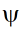
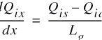
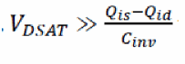
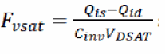
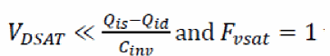
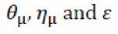

Model Equations
Transistor drain current formulation
The current is evaluated using the following procedure. The master equation for drift current is given by:
Here  is the potential at location x. For the charge-based simplified all-region model, the channel layer charge is expressed as:
The effective mobility is given by:
Using equations 2 and 3, equation 1 can be rewritten as:
Using current continuity and assuming  in the denominator of (4), we can integrate the above expression from x=0 to x=Lg and Qix=Qis to Qix=Qid. The resulting current is given by:
Here v is the carrier velocity combining strong and weak accumulation regimes. To make the current expression look similar to that of VS model equation 4 in equation 8, the equation 5 can be reformulated as follows:
and, VDSAT is similar to that in equation 5 in equation 8. VDSAT must account for both strong and weak accumulation regimes and so should v. To do this we follow a similar procedure as shown below:
vsat is called the GaN saturation velocity which is similar to the saturation velocity in Si.
In the long channel limit, where transport is mobility limited,  , which means  and equation 6 reduces to:
Equation 8 is similar to the EKV model used for long channel MOSFETs. In shorter channel velocity saturation (Vsat) limit, , which leads to a simple current expression:
The expression for charges at the source-end and drain-end are given by:
Here, complete S/D symmetry is achieved using the charge formulation shown above. The terms Vxs and Vxd are in turn required to include velocity-saturation effects as shown:
The charge equations above are needed to model the subthreshold regime accurately. In the subthreshold regime the above equations are reduced to:
Substituting (7) and (12) in (8), the current ID in subthreshold regime, where diffusion current dominates, is
This is similar to the sub threshold MOSFET diffusion current.
Transition from non-saturation to saturation current
In order to facilitate smooth transition from linear to saturation regimes under applied VDS. The charge expression at the source and drain-end is modified with VDS as:
Here VDSAT is as given in (7a) and VDSi=VDi-VSi is the intrinsic drain to source voltage. In the linear regime (at low VDSi), VDSATFSAT approaches VDiSi and Qid in (14) becomes comparable to Qis. Thus, the current formulation of (5) reduces to
GaN specific effects
where, Vinj is the bias independent injection velocity at low channel charge.
Carrier mobility is modeled as:
Here 
are fitting parameters and T0 is reference temperature.
Transistor channel charge formulation
Single moment partition method is used to get analytical closed form equations:
Here, QGi(x) is the areal charge density at any point x in the channel. QGi(x) and its dependence on bias depends on the mode of transport of carriers in the channel.
Gate charge in drift diffusion regime
The source and drain partitioned charges are based on Qinvs0 and Qinvd0 terms used for current formulation (DIBL effect is removed from these terms to avoid negative capacitances) and is therefore self-consistent with transport.
Field plate charges
The body capacitance associated with each FP is computed in the same way:
The capacitance associated with the gate field plate extension on the source-side is computed using similar method (instead of adding additional transistors for ease of computation). The capacitance is implemented only if flagfpxs=1.
Gate current formulation
The forward diode current is given by:
In addition to forward current, the reverse GIDL and recombination currents are captured through empirical diode equations to account for drain voltage dependence on reverse-leakage gate currents.
Charge trapping effects
Source function for charge trapping which has the requisite bias and temperature dependence:
Device-noise: RF- and phase-noise modeling
The noise sources are of two variants:
- RF-white noise associated with the device-level-noise sources
- low-frequency noise sources associated with charge-states in the device
RF-device-noise
The noise-power-spectral-density linked to the parasitic-resistances are given by:
Device-phase-noise
The phase-noise model adopted in the MVSG approach to capture the phase-noise in GaN-HEMTs and is given by:
Return to top